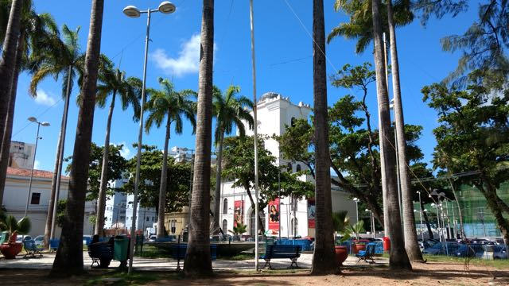

Pontos Turísticos
Praça do Arsenal
A Praça do Arsenal é um espaço histórico que abriga eventos culturais e artísticos. É conhecida por seus prédios coloniais e é um lugar agradável para caminhar e apreciar a arquitetura.
Pátio de São Pedro
O Pátio de São Pedro é uma praça vibrante e colorida, cercada por bares, restaurantes e lojas de artesanato. É um ponto de encontro popular para moradores e visitantes.